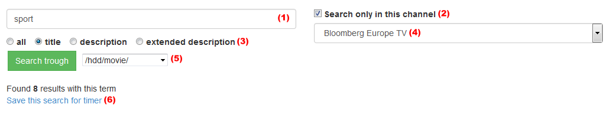
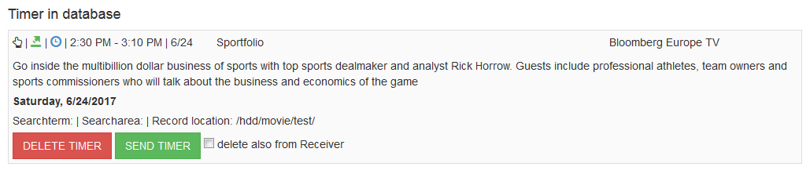

1. Searchterm
2. Select the checkbox to search only in choosen channel
3. Define the area to search
4. Select the channel to search
5. Choose location where broadcast's should saved when sending a timer
6. Save the term and options for automatic search
top
- Manual set timer
- Found by automatic search
- Event is current running
- Event is incoming
- Event is expired
- Timer was sent to Receiver
- Timer was not sent to Receiver
topCrawl channel ID's - When bouquets are already in database, this option will save all channels within the bouquets. The channels are displayed in > Settings > Channel list.
Crawl EPG from channels - This option crawl the EPG from the channels, which are selected in channel list. Any existing EPG in database will deleted before.
Crawl channel separate - At this page channels could crawl separate. It display the date from the last broadcast., The date from the last crawl and the summary of EPG entries of the channel.
The opening from this page could take some time. By clicking 'Crawl channel' the existing EPG from the channel in database will deleted before.
Crawl search - Write timer in database - This option search the saved searchterms within EPG and save the timer in database.
Send timer from database to Receiver - This option send the timer in database to the Receiver.
topCrawler
How many EPG entries per channel should be write in database | Set here how many broadcasts per channel should be saved in database.
How many Channels/Services per Bouquet should be write in database | Only relevant when not all channels from a bouquet should be saved in database.
Activate automatic Search Crawler | If this option is activated, the script will search the saved searchterms within EPG and create a Timer if the term was found.
Activate automatic EPG Crawler | If this option is activated, the script crawl the channel when the sunnmary of broadcasts is under the summary which are set.
Send dummy timer | If this option is activated a dummy timer will send to Receiver every day, to switch it on from Deep Standby before crawling process begins.
Start Crawler at remaining EPG entries | Set here the minimum of broadcasts before the automatic Crawler starts.
Set time when EPG Crawler should start | Set here the time in 24 format when crawling should start.
When crawling finished, change to this channel | Set here the channel to zap when crawling was finished.
Switch Receiver after crawling | Option to switch to Standby or turn off the Receiver.
Channel Zaper
Activate automatic Channel Zaper | If this option is activated the Channel Zaper will begin zapping at the set time.
This function stands alone and ensures that the EPG on Receiver is up to date.
Wait on channel (in seconds) | Time to remain on a channel to read the EPG. The time is valid for the zapping while crawling and stand alone Channel Zaper.
Set time when Channel Zaper should start | Set here the time in 24h format when Channel Zaper should start. Take care that crawling process and zapping from Channel Zaper has no time conflict.
Repeat zapping | Set here the repeat time for the zapping.
Settings
Activate Cron | If this option is selected, the cron.php will do nothing. All automatic processes are stopped.
Displayed time format | Select here the displayed time format.
Period of time from start, at Broadcast list | Set here the time for start at 'Broadcast now'
As example: Now it's 11:00 AM. When clicking 'Broadcast now' all broadcasts will displayed that starts at 11:00 AM.
If period of time is set 10 Minutes, broadcast's with start between 10:50 AM and 11:00 AM are displayed.
Period of time from end, at Broadcast list | Set here the time for end at 'Broadcast now'
As example: Now it's 12h AM. When clicking 'Broadcast now' all broadcasts displayed that are between 12:00 AM and 12:05 AM.(5 minutes was the lowest time value)
If period of time is set 10 Minutes, broadcasts with end between 12:05 AM and 12:15 AM are displayed.
The time which was set here, was also the browse time for Broadcast list.
Period of time from start, at Primetime list | Same as for 'Broadcast now' list.
Period of time from end, at Primetime list | Same as for 'Broadcast now' list.
Display EPG at search from broadcasts who already expired | Usually only broadcast are displayed who are not expired. Click here to show also expired broadcasts.
Display Streaming symbol | Display a streaming symbol at Broadcast, Primetime and Channel Browser list.
Display IMDb symbol | Display a symbol with link to IMDb, to get Informations about the broadcast.
Display Ticker on startpage | This option display a Ticker with incoming Timer's on startpage. The Ticker are displayed only on devices with wide screen.
Period of time from Ticker | All timer within the time period are shown.
Mark searchterm at search results | Mark's searchterms within the results.
Reload 'Broadcast today' Progressbar on Startpage continously | If this option is activated the green Progressbar will updated continously
Delete EPG which is older than ... hours | Expired broadcasts will deleted from database.
Connection to Receiver | Option to connect Receiver with http or https
Timer Settings
Send timer automatic to Receiver | Send timer which are created by automatic Search Crawler to Receiver.
Delete expired timer from Timerlist | Expired timers will deleted from database.
Delete expired timer from Receiver | Expired timers will deleted from Receiver.
Additional record time at end from broadcast | Add some time to the end from broadcast.
Channel List - Display the channels which are in database.
Bouquet List - Display the bouquets which are in database.
Recorded files on Receiver could be streamed, downloaded and deleted.
If a new folder on Receiver was added, a click on 'Reload folders' is required to add it also to database.
Switch Receiver to Standby/No Standby
Teletext Browser
Display the Teletext from Receiver as Image in Browser. For this function the Receiver must be switched on.
Channel Zaper
Start's the Channel Zaper manually. All channels which are selected in Channel list will zapped.
TV Services
Displayed all TV Channels from Receiver. Option to stream and zap every Service.
If a new channel scan on Receiver was made, a click on 'Copy Services from receiver' is required to add the new channels to database.